Gallery: Faceting, Composition & Annotation
Source:vignettes/articles/gallery-composing.Rmd
gallery-composing.Rmd本页解决什么问题：Compose multi-panel and annotated figures end to end. 前置：已完成 gallery-annotations
下一步：→ transform-recipes
Small multiples
Wrapped facets
ggplot2::mpg |>
plotit(encode(x = displ, y = hwy)) |>
mark_point() |>
split_wrap(class, ncol = 4, scales = "free") |>
label_title("split_wrap(class, ncol = 4, scales = \"free\")")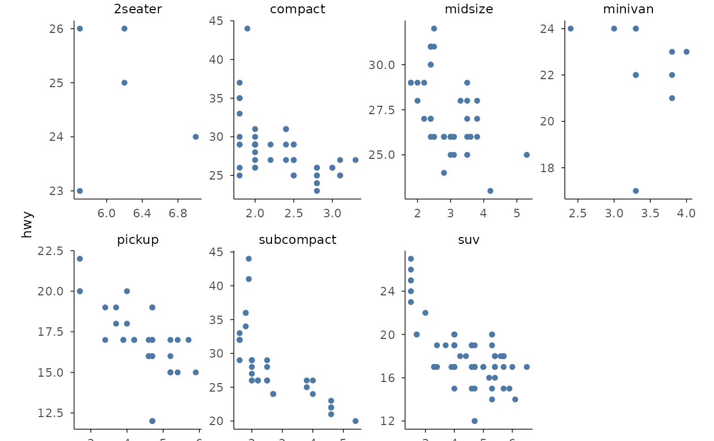
Grid facets
iris |>
plotit(encode(x = Sepal.Width, y = Sepal.Length)) |>
mark_point() |>
split_wrap(Species, ncol = 3) |>
label_title("split_wrap(Species, ncol = 3)")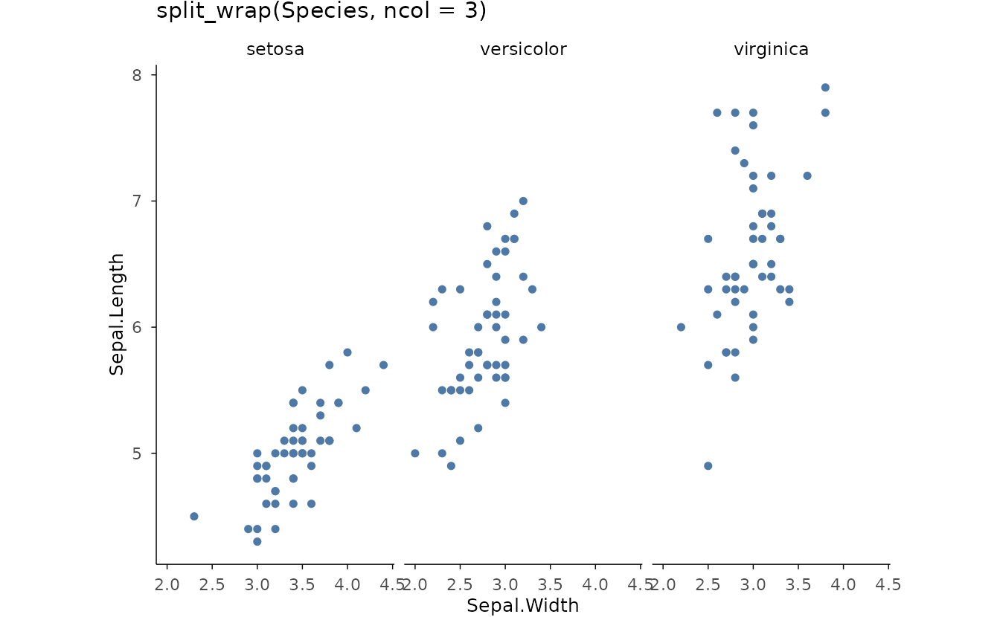
Two-variable grid
set.seed(4)
tips <- data.frame(
day = rep(c("Thur", "Fri", "Sat", "Sun"), each = 20),
time = rep(c(
"Lunch", "Dinner", "Lunch", "Dinner", "Lunch", "Dinner",
"Lunch", "Dinner"
), each = 10),
bill = round(runif(80, 5, 50), 1)
)
tips |>
plotit(encode(x = bill)) |>
mark_histogram(bins = 8) |>
split_grid(day, cols = ggplot2::vars(time)) |>
label_title("split_grid(rows = day, cols = time)")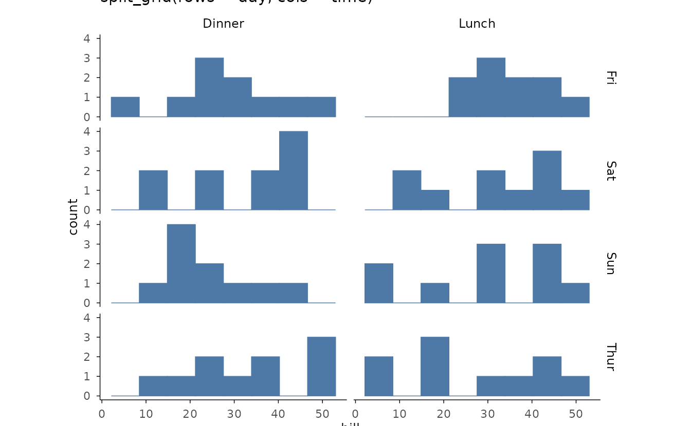
Multi-plot figures
Tagged grid
p1 <- iris |>
plotit(encode(x = Sepal.Width, y = Sepal.Length, colour = Species)) |>
mark_point()
p2 <- iris |>
plotit(encode(x = Species, y = Sepal.Length, fill = Species)) |>
mark_boxplot()
compose_grid(p1, p2, ncol = 2, tag_levels = "1") |>
label_title("compose_grid(ncol = 2, tag_levels = \"1\")")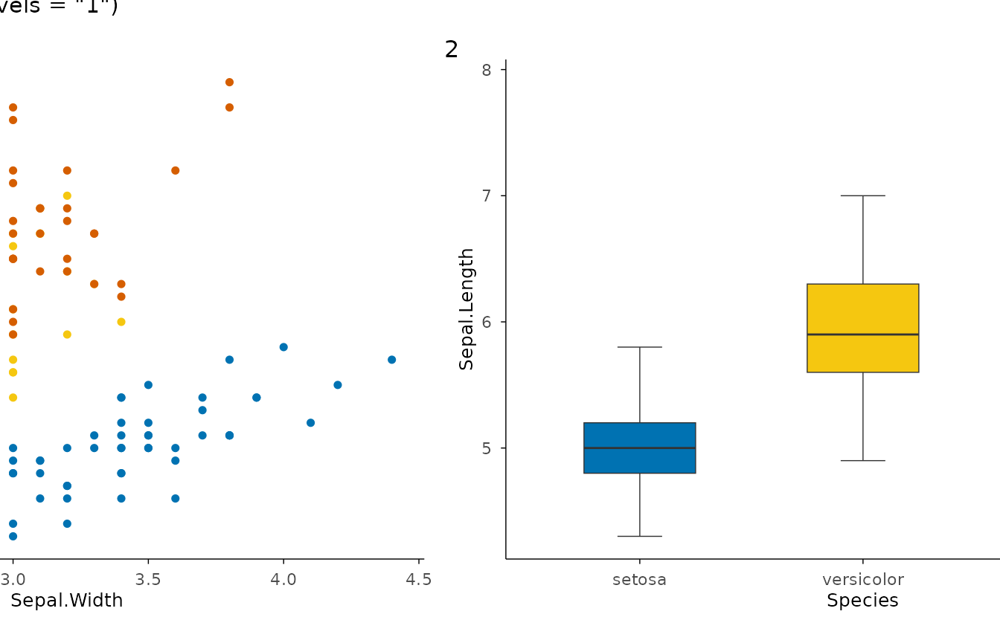
Shared legend across panels
pa <- ggplot2::mpg |>
plotit(encode(x = displ, y = hwy, colour = class)) |>
mark_point()
pb <- ggplot2::mpg |>
plotit(encode(x = displ, y = cty, colour = class)) |>
mark_point()
compose_grid(pa, pb, ncol = 1, guides = "collect", axes = "collect_x") |>
label_title("Guides collected, x axes shared")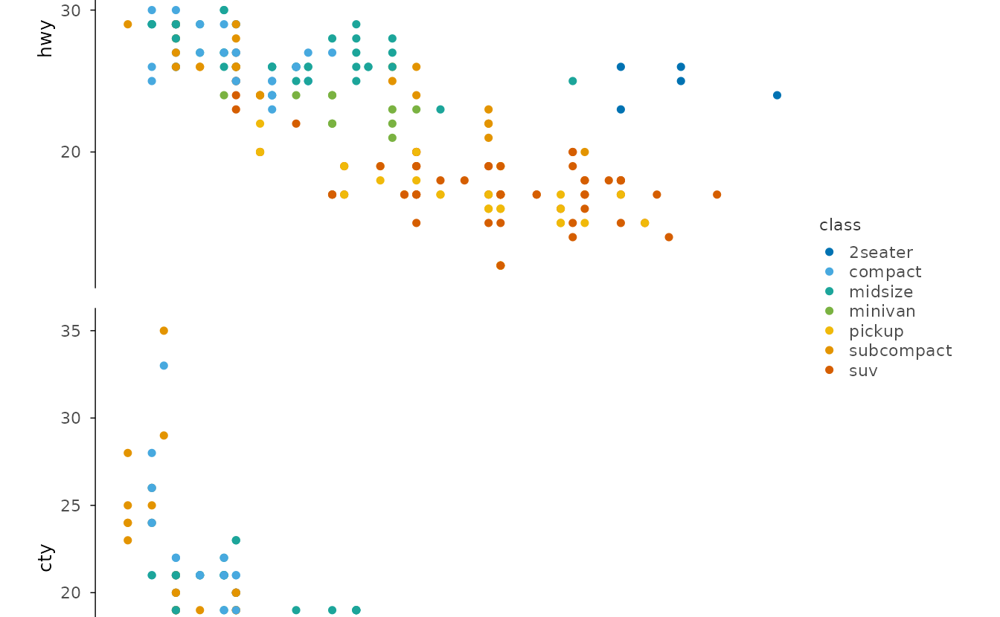
Inset
base <- faithful |>
plotit(encode(x = eruptions, y = waiting)) |>
mark_point(alpha = 0.4)
zoom <- faithful |>
plotit(encode(x = eruptions, y = waiting)) |>
mark_point() |>
project_cartesian(xlim = c(4, 5.5), ylim = c(70, 90)) |>
style(base_size = 7)
compose_inset(base, zoom, left = 0.45, bottom = 0.55, right = 0.95, top = 0.95) |>
label_title("compose_inset() with a zoom panel")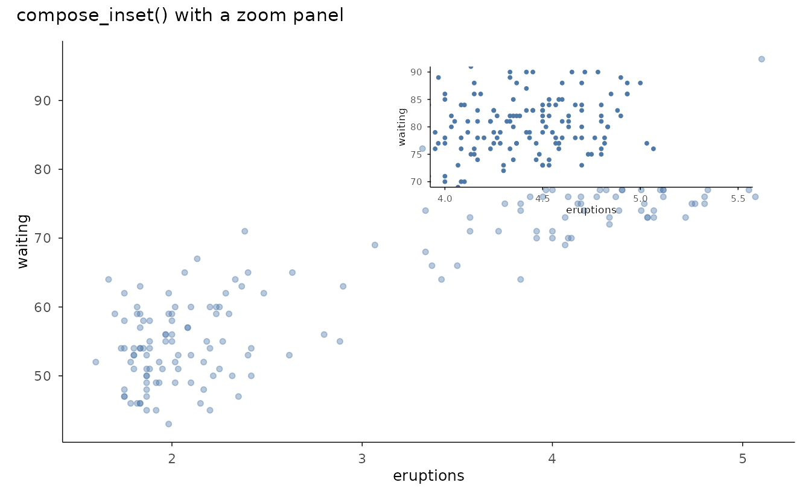
Marginal distributions
main <- iris |>
plotit(encode(x = Sepal.Width, y = Sepal.Length, colour = Species)) |>
mark_point()
top <- iris |>
plotit(encode(x = Sepal.Width, fill = Species)) |>
mark_histogram(bins = 15, alpha = 0.6)
right <- iris |>
plotit(encode(x = Sepal.Length, fill = Species)) |>
mark_histogram(bins = 15, alpha = 0.6) |>
project_cartesian(flip = TRUE)
compose_marginal(main, top, right) |>
label_title("compose_marginal(main, top, right)")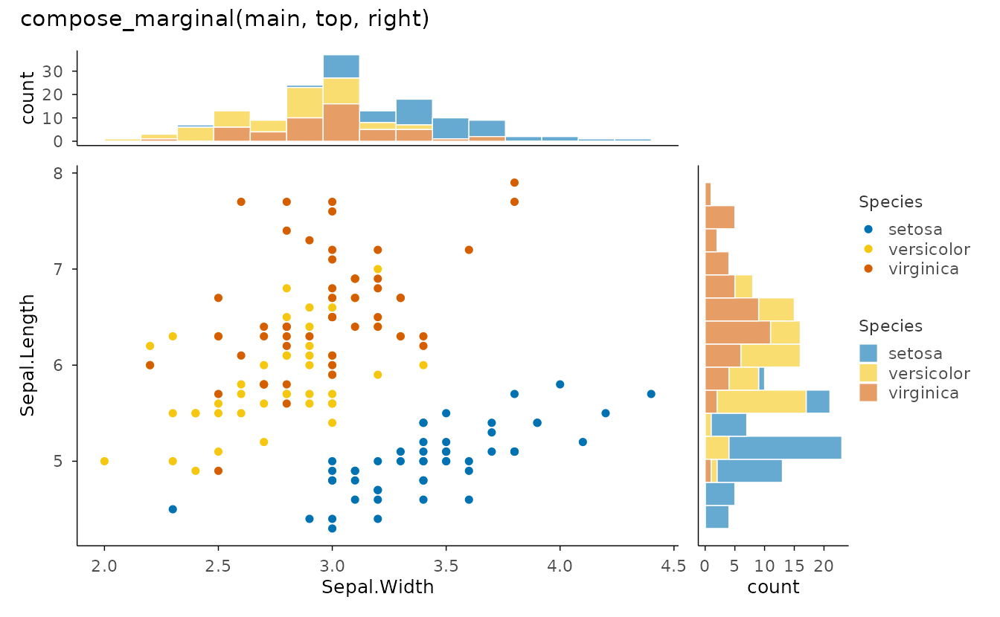
Annotation layers
Reference lines
ggplot2::mpg |>
plotit(encode(x = displ, y = hwy, colour = class)) |>
mark_point(size = 2) |>
mark_rule(yintercept = 30, color = "#E15759", linetype = "dashed") |>
mark_rule(slope = -4, intercept = 40, color = "grey40", linewidth = 0.4) |>
label_title("mark_rule(): h-line and an abline")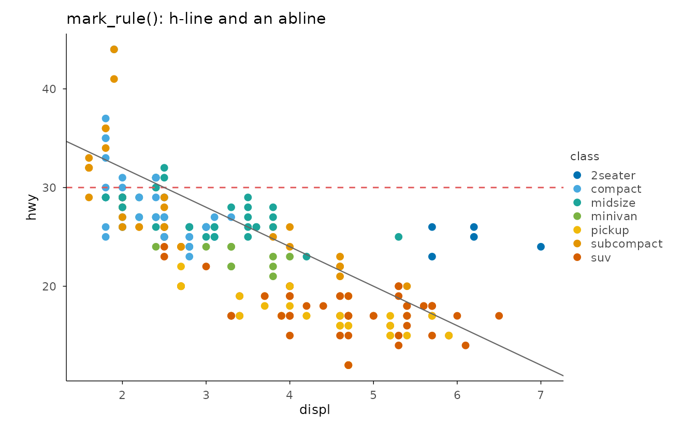
Segments from data
segs <- data.frame(
x = c(1, 2, 3, 4), xend = c(2, 3, 4, 5),
y = c(1, 2, 3, 4), yend = c(2, 3, 4, 5)
)
segs |>
plotit(encode(x = x, y = y, xend = xend, yend = yend)) |>
mark_rule() |>
mark_point(
data = segs[, c("x", "y")], mapping = encode(x = x, y = y),
inherit.aes = FALSE, size = 2
) |>
mark_point(
data = segs[, c("xend", "yend")],
mapping = encode(x = xend, y = yend),
inherit.aes = FALSE, size = 2, colour = "#E15759"
) |>
label_title("Data-driven mark_rule segments")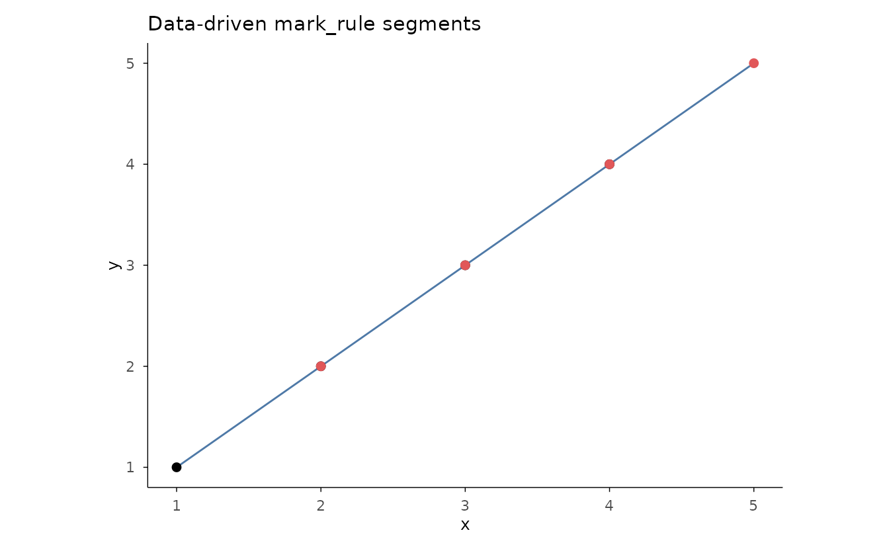
Direct labels
lab <- subset(mtcars, mpg > 30 | wt > 4.5)
lab$car <- rownames(lab)
mtcars |>
plotit(encode(x = wt, y = mpg)) |>
mark_point() |>
mark_label(
data = lab, mapping = encode(x = wt, y = mpg, label = car),
inherit.aes = FALSE, size = 2.5
) |>
label_title("mark_label(): boxed labels")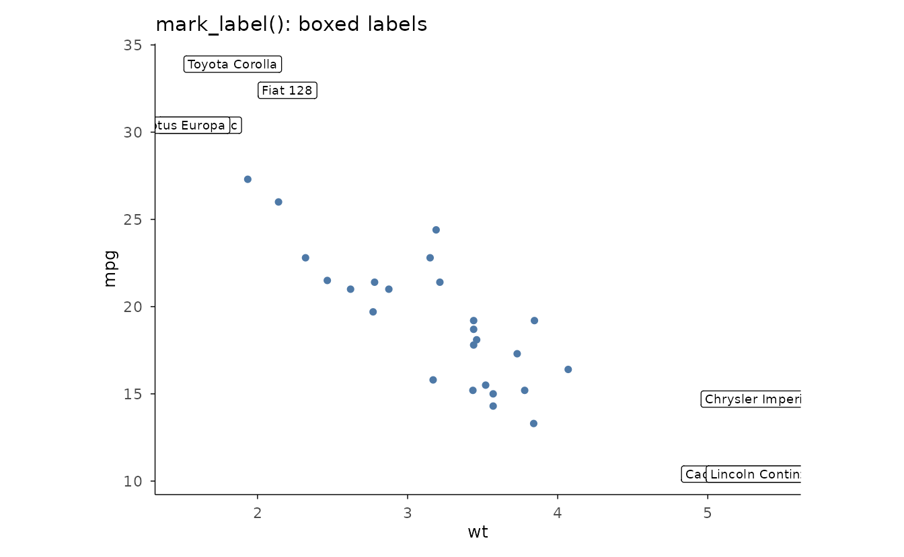
Repelled labels
set.seed(2)
pts <- head(iris, 12)
pts$name <- rownames(pts)
iris |>
plotit(encode(x = Sepal.Width, y = Sepal.Length, colour = Species)) |>
mark_point() |>
mark_text(
data = pts,
mapping = encode(x = Sepal.Width, y = Sepal.Length, label = name),
inherit.aes = FALSE, repel = TRUE, size = 2.5
) |>
label_title("mark_text(repel = TRUE)")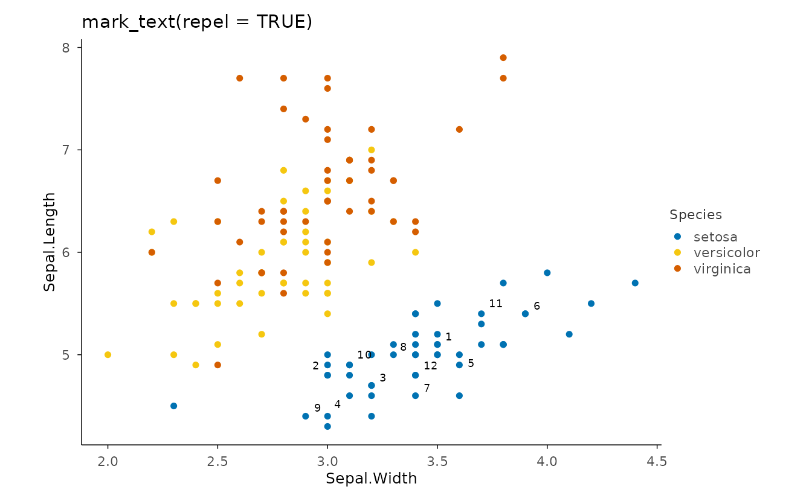
Significance brackets
set.seed(10)
trt <- data.frame(
group = rep(c("ctrl", "low", "high"), each = 25),
value = c(rnorm(25, 5), rnorm(25, 6.8), rnorm(25, 8.1))
)
comp <- data.frame(
group1 = c("ctrl", "low"),
group2 = c("low", "high"),
label = c("**", "***")
)
trt |>
plotit(encode(x = group, y = value, fill = group)) |>
mark_boxplot() |>
mark_significance(comp, y_position = c(11.5, 13)) |>
label_title("mark_significance() with custom comparisons")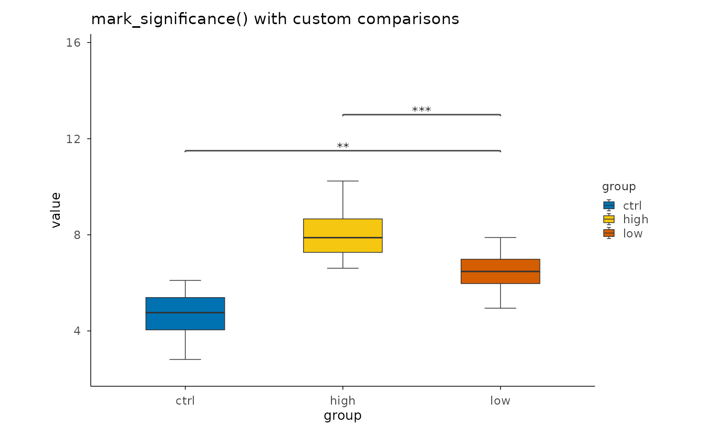
Label & style protocol
Hide vs reset
p <- ggplot2::mpg |>
plotit(encode(x = displ, y = hwy, colour = class)) |>
mark_point()
left <- p |>
label_axis("Engine displacement (L)", aes = "x") |>
label_axis("Highway MPG", aes = "y")
right <- p |>
label_axis(hide = TRUE, aes = "x") |>
label_axis(hide = TRUE, aes = "y") |>
label_legend(hide = TRUE)
compose_grid(left, right, ncol = 2) |>
label_title("Left: custom axis titles. Right: hide = TRUE everywhere")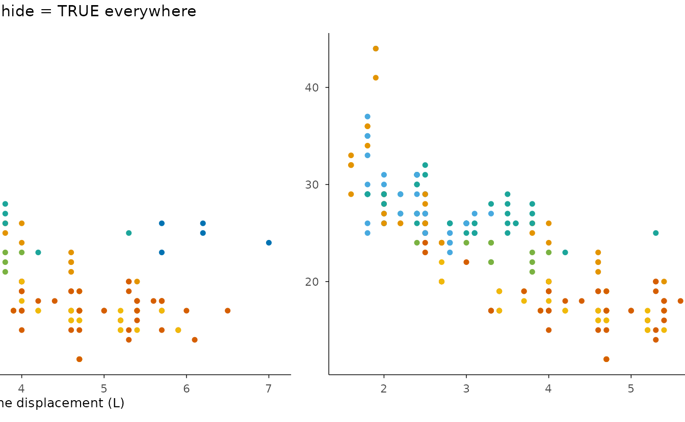
Theme base size
ggplot2::mpg |>
plotit(encode(x = displ, y = hwy, colour = class)) |>
mark_point(size = 2) |>
style(base_size = 8) |>
label_title("style(base_size = 8)")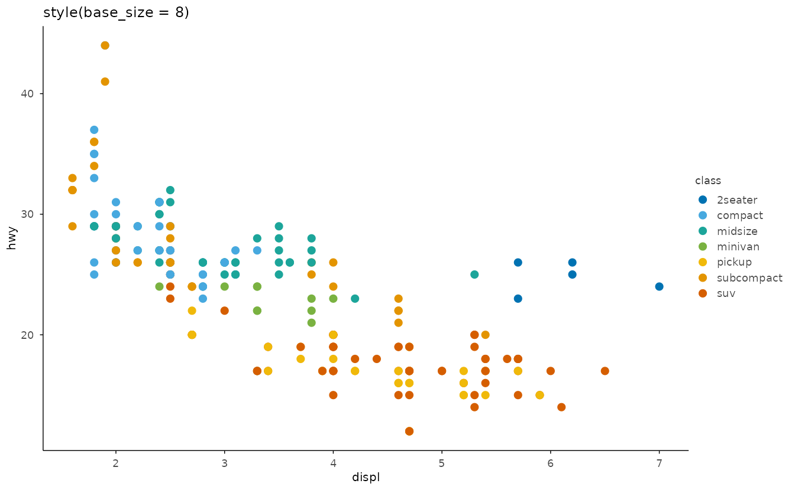
Custom theme factory
style_warm <- make_theme("style_warm",
plot.background = ggplot2::element_rect(fill = "#FBF7F0", colour = NA),
panel.background = ggplot2::element_rect(fill = "#FFFDF8", colour = NA)
)
ggplot2::mpg |>
plotit(encode(x = displ, y = hwy)) |>
mark_point(colour = "#B5651D", size = 2) |>
style_warm() |>
label_title("make_theme() presets")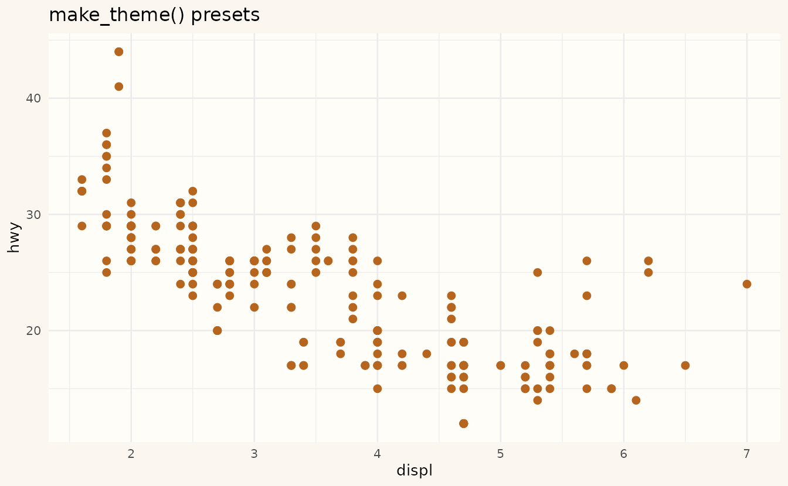
Flagship: annotated clustered heatmap (compose_annot, stage 5)
The tidyheatmaps-style complex heatmap is a composition, not a new mark: one hclust object drives both the heatmap row order and the dendrogram strip, so tree tips align with heatmap rows by construction.
set.seed(7)
cols <- paste0("v", 1:6)
g1 <- matrix(rnorm(60, mean = 1), nrow = 10, dimnames = list(paste0("a", 1:10), cols))
g2 <- matrix(rnorm(60, mean = 5), nrow = 10, dimnames = list(paste0("b", 1:10), cols))
mat <- rbind(g1, g2)
h <- stats::hclust(stats::dist(mat))
hm <- mat |>
plotit(encode()) |>
mark_heatmap(cluster = h) |>
scale_fill(range = "rdylbu", n_bins = 15, na_color = "grey85")
#> Scale for fill is already present.
#> Adding another scale for fill, which will replace the existing scale.
tree <- as_graph(h) |>
plotit() |>
layout_dendrogram(direction = "up") |>
mark_rule(data = ~edges)
hm |> compose_annot(top = tree)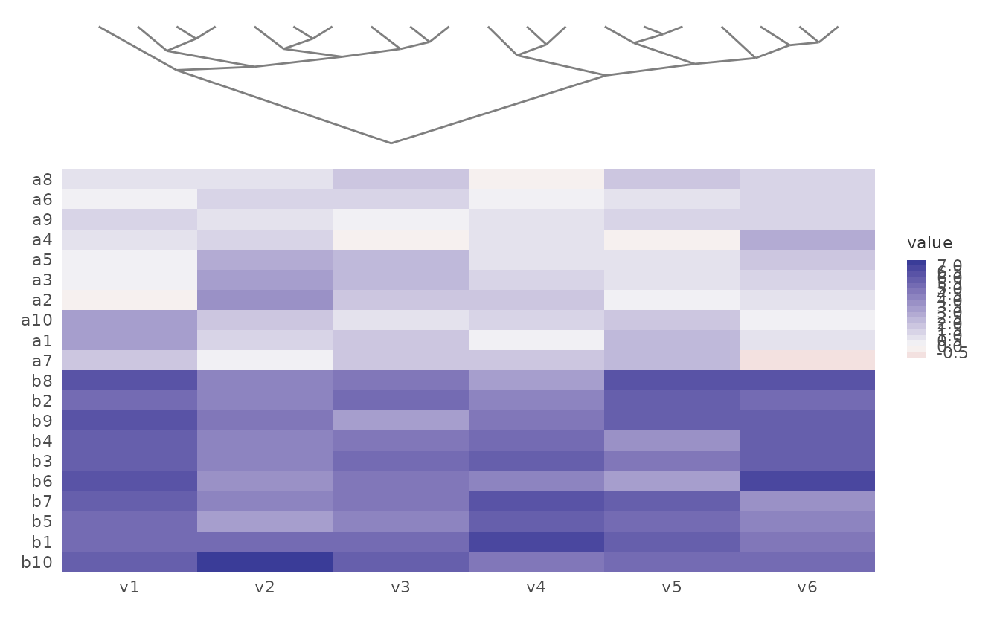
Gap spacers between strips and the base are available via
gap =; the same engine backs
compose_marginal() (top + right strips with shared axes and
hidden redundant axis labels).